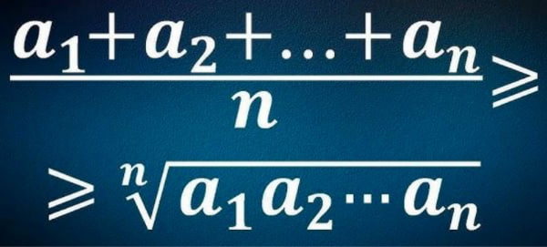

Cauchy-Schwarz Inequality

The Cauchy-Schwarz Inequality is a versatile mathematical tool that finds applications in a wide range of disciplines, especially those involving vectors, inner products, and mathematical inequalities. It allows for the establishment of bounds and relationships, making it a valuable tool in both theoretical and practical contexts.